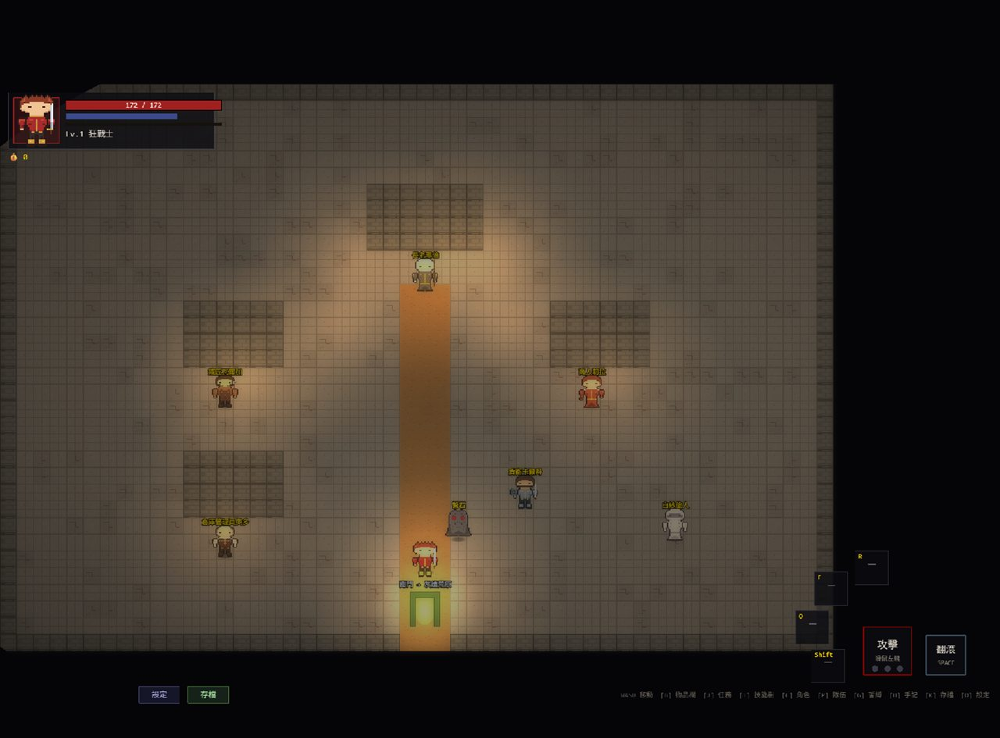
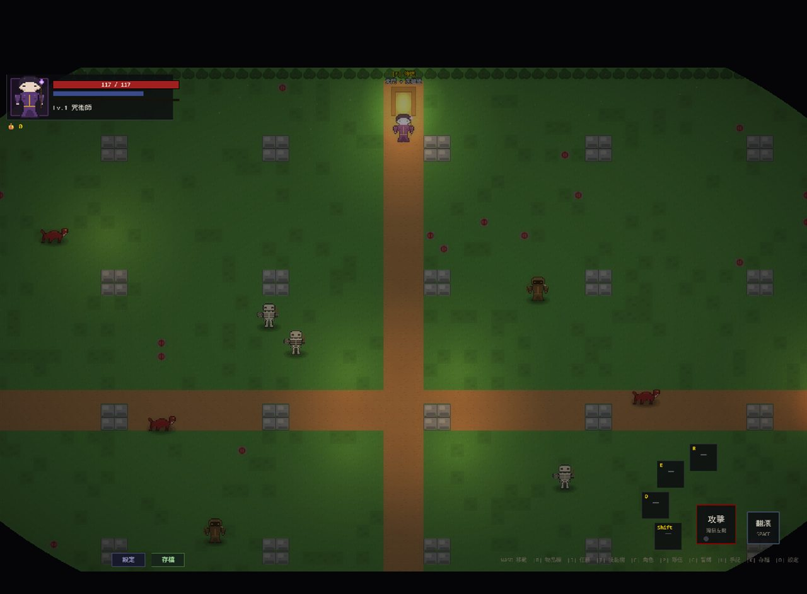

暗色奇幻 · 俯視角動作 RPG
命運是既定的祭壇，誓念是唯一的裝備。
世界的結局早已被寫下。 神將知道你的名字，祭壇在盡頭靜靜等你。 你唯一能決定的，是走到那裡之前—— 你立下了什麼誓，又背棄了誰。
A glimpse of the world


Why it cuts deep
立下誓言換取力量——但毀誓的反噬會如影隨形。你身上最強的裝備，是你敢不敢守住自己的承諾。
忠誠、怨懟、誓念都在看不見的地方累積。遊戲從不明說，但世界會記得，並在結局回敬你。
擊殺、饒恕、或與之立約收服。你怎麼對待對手，決定他們成為並肩的夥伴，還是反噬的那把刀。
五章主線通往截然不同的終局；那是存讀檔救不回的分歧，全繫於你一路的誓與叛。
通關只是開始。輪迴深處藏著更兇的挑戰，與你「前世」留下的烙印，等你再度踏入。
Choose your vow
Before you begin
Share the vow
用手機掃描 QR code，或直接把連結傳給朋友——不用下載，開了就能玩。
你會守住哪一句誓？